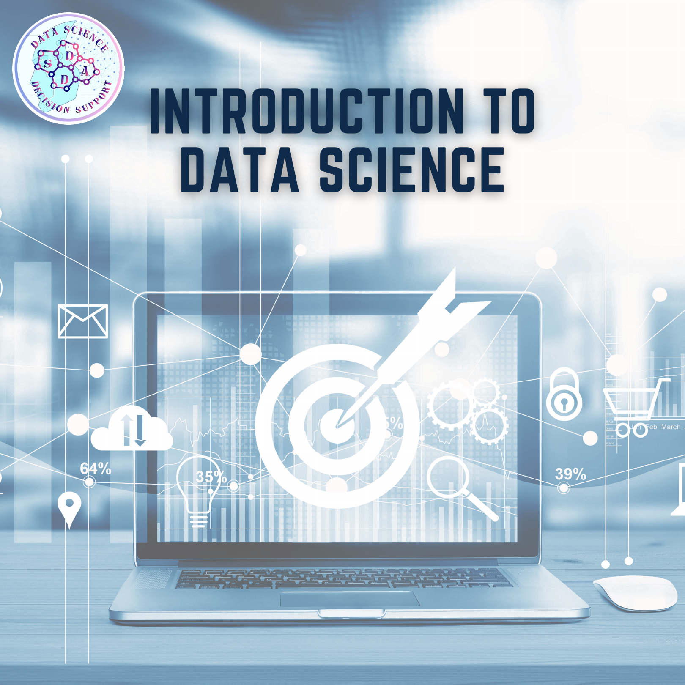
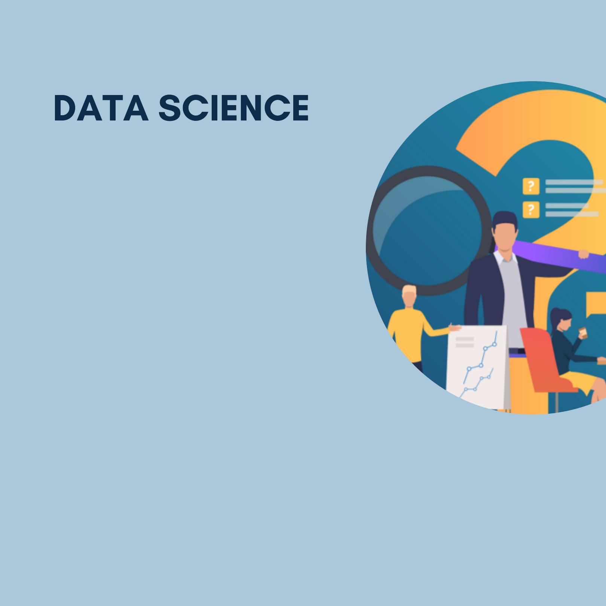
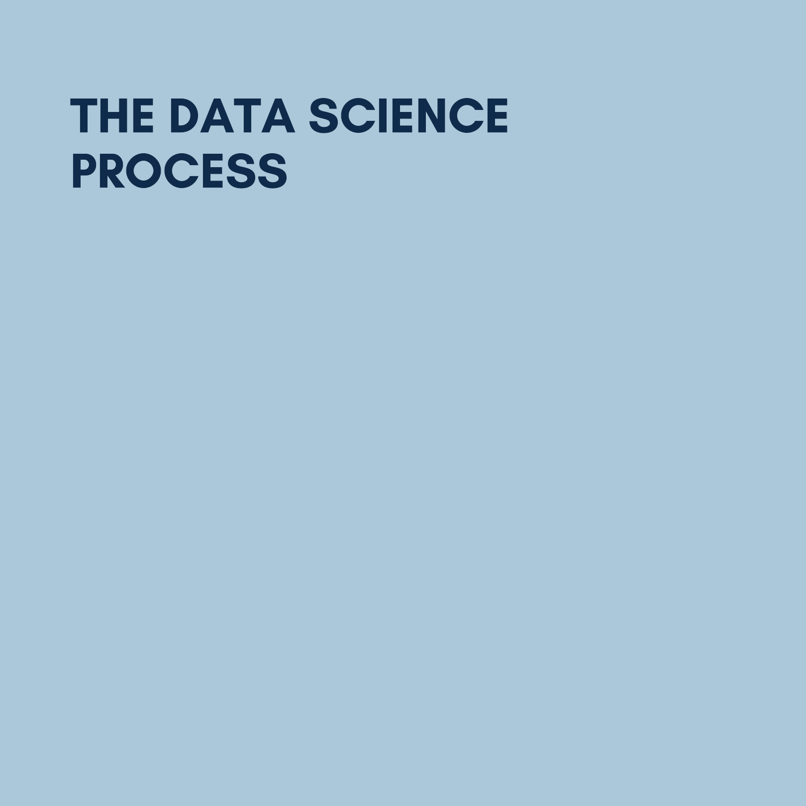
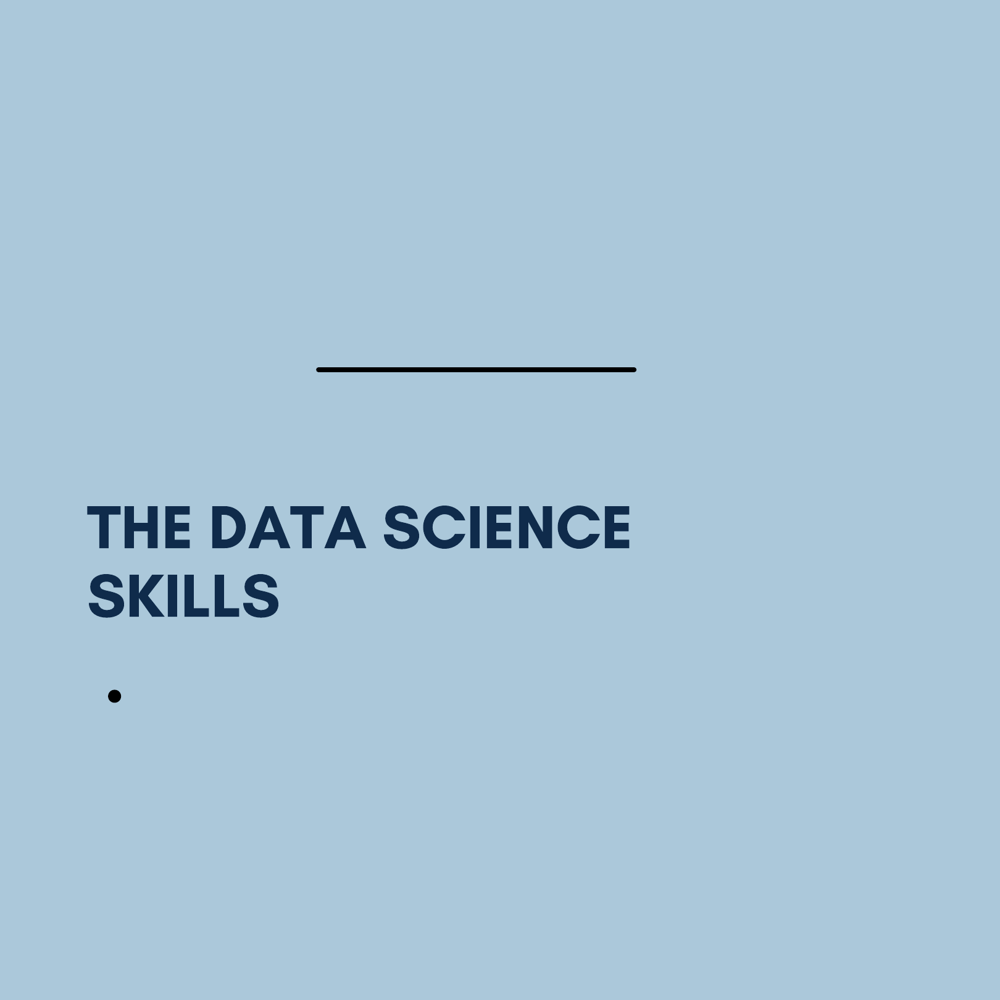
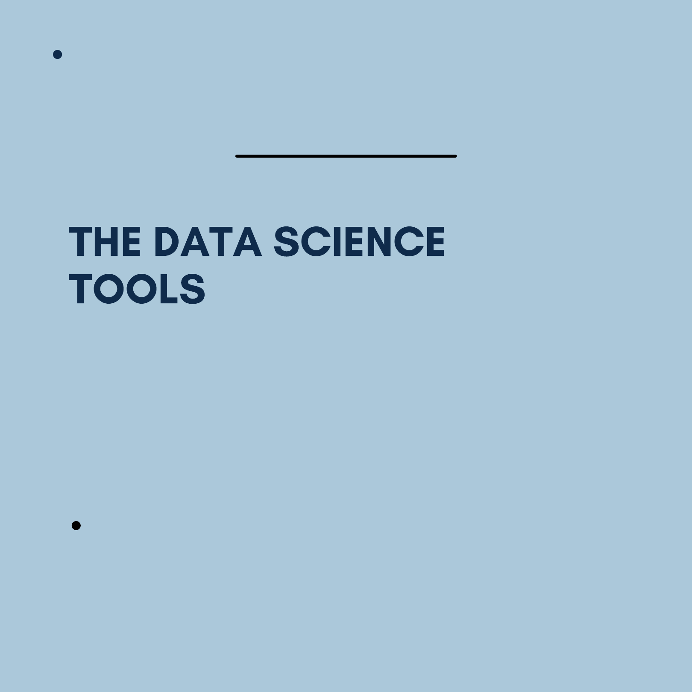
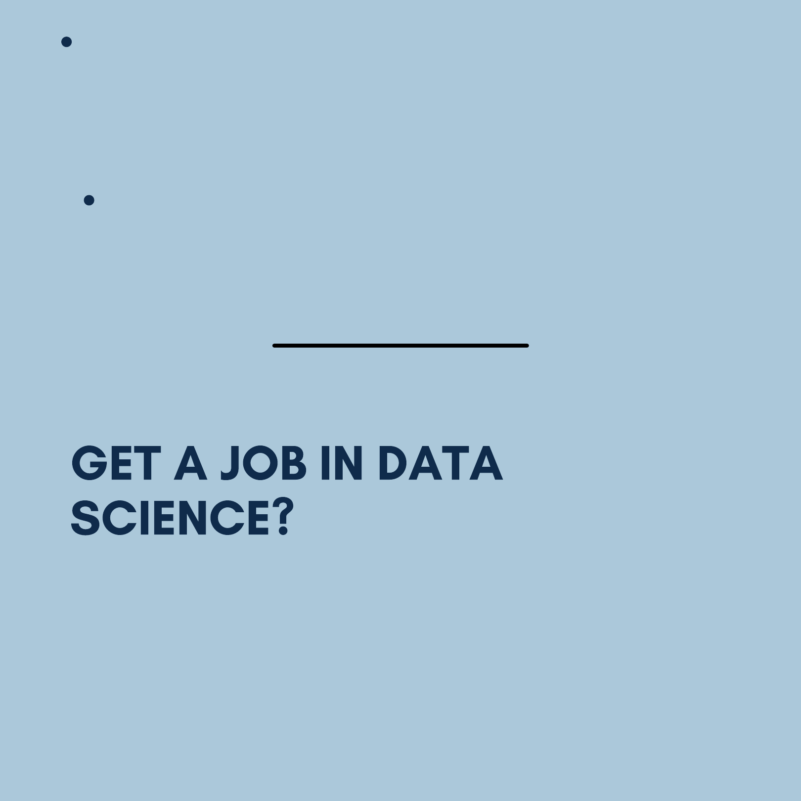

F O R B E G I N N E R S
H T T P S : / / S D A D C L U B . T E C H /
SDAD CLUB
CREATED BY :
Asmae MOUKHTATIF
President of SDAD Club
https://www.linkedin.com/in/asmae-
moukhtatif-a21774192/
https://asmaemoukhtatif.me
SDAD CLUB
Table of
CONTENTS
What is data science ?
The Data Science Process
Data Science Skills
How to get a job in data science?
Data Science Tools
Recommandations
Ressources

SDAD CLUB
W H A T I S
“The ability to take data—
to be able to understand
it, to process it, to extract
value from it, to visualize
it, to communicate it—
that’s going to be a hugely
important skill in the next
decades.” - Hal Varian,
Google’s Chief Economist

SDAD CLUB
Data science in simple words can be defined as an
interdisciplinary field of study that uses data for various
research and reporting purposes to derive insights and
meaning out of that data.
The principal purpose of Data Science is to find patterns
within data. It uses various statistical techniques to
analyze and draw insights from the data. From data
extraction, wrangling and pre-processing
More generally, a data scientist is someone who knows
how to extract meaning from and interpret data, which
requires both tools and methods from statistics and
machine learning, as well as being human. She spends a
lot of time in the process of collecting, cleaning, and
munging data, because data is never clean. This process
requires persistence, statistics, and software
engineering skills—skills that are also necessary for
understanding biases in the data, and for debugging
logging output from code.

SDAD CLUB
W H A T I S
Step 1: Frame the problem
The first thing you have to do before you solve a
problem is to define exactly what it is. You need to
be able to translate data questions into something
actionable. A great way to do this is to ask the
right questions. You need as much context as
possible for your numbers to become insights
"Data really powers everything that we do."
— By Jeff Weiner, CEO of LinkedIn
SDAD CLUB
Step 2: Collect the raw data needed
for your problem
Once you’ve defined the problem, you’ll need data to
give you the insights needed to turn the problem
around with a solution. This part of the process
involves thinking through what data you’ll need and
finding ways to get that data, whether it’s querying
internal databases, or purchasing external datasets.
Step 3: Process the data for analysis
Now that you have all of the raw data, you’ll need to
process it before you can do any analysis.It’s up to
you to go through and check your data to make
sure you’ll get accurate insights You’ll want to check
for the following common errors: ( Missing values,.
Corrupted values , Timezone differences ...)

SDAD CLUB
Step 4: Explore the data
When your data is clean, you’ll should start playing
with it! The difficulty here isn’t coming up with ideas
to test, it’s coming up with ideas that are likely to
turn into insights. so you’ll have to prioritize your
questions.
Step 5: Perform in-depth analysis
This step of the process is where you’re going to
have to apply your statistical, mathematical and
technological knowledge and leverage all of the data
science tools at your disposal to crunch the data
and find every insight you can.

SDAD CLUB
Step 6: Communicate results of the analysis
You need to craft a compelling story here that ties
your data with their knowledge. You start by
explaining the reasons behind it
W H A T A R E
An Analytical Mind
You’ll need an analytical mindset to
do well in data science.
SDAD CLUB
Mathematics
Mathematics is an important part
of data science.
Statistics
You must know statistics to infer insights from
smaller data sets into larger populations.
Algorithms
Understanding how to use machines to do
your work is essential to processing and
analyzing data sets too large for the human
mind to process.
Data Visualization
To drive impact, you will have to convince
others to believe and adopt your insights.

SDAD CLUB
Business Knowledge
Data means little without its context.
W H A T A R E
You’ll now need to learn how to use modern
data science tools. Each tool has their
strengths and weaknesses, and each plays a
different role in the data science process.
File Formats
Data can be stored in different file formats.
Here are some of the most common:
SDAD CLUB
CSV : Comma separated values.
SQL: or structured query language
JSON: Javascript Object Notation
Excel
Excel is often the gateway to data science
Python
Python is a powerful, versatile programming
language for data science.
R
R is a staple in the data science community
because it is designed explicitly for data
science needs.

SDAD CLUB
Hadoop
By using Hadoop, you can store your data in
multiple servers while controlling it from one.
NoSQL
NoSQL allows you to manage data without
unneeded weight.
H O W T O
You need to make a great first impression
to break into data science
SDAD CLUB
Build a Data Science Portfolio and Resume
Prepare for a data science interview
Get a data science internship
Finding a Mentor
Meetups and Conferences
Job Boards for Data Science
Kaggle offers a job board for data scientists.
You can find a list of open data scientist jobs
at Indeed, the search engine for jobs.
Datajobs offers a listings site for data
science.
Datasciencejobs scrapes data science jobs
from around the web into one centralized
location.
SDAD CLUB
B E S T
There are best of the websites where you can learn
everything about data science
https://www.datacamp.com/
https://365datascience.com/
https://www.kaggle.com/
SDAD CLUB
B E S T
https://365datascience.com/
https://www.springboard.com/

SDAD CLUB
YOUR LIFE
T R U S T T H E T I M I N G O F